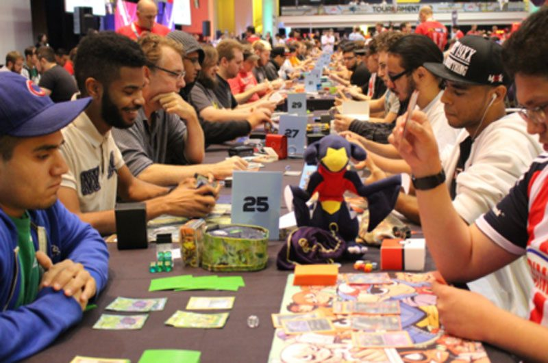

Torneo Pokémon 12/06
Durante el día jueves 12 de junio, se llevó a cabo un emocionante torneo de Pokémon TCG donde en una apasionante final Juan Liempi logró alzarse con la victoria.
Leer másDurante el día jueves 12 de junio, se llevó a cabo un emocionante torneo de Pokémon TCG donde en una apasionante final Juan Liempi logró alzarse con la victoria.
Leer másYa están abiertas las votaciones para las elecciones de torneos de julio, no olvides participar en la sección de votaciones.
Votar ahoraEl torneo de Yu-gi-oh! se celebró el 11 de junio, con la participación de los mejores duelistas de la región. ¡No te pierdas el próximo evento!
Leer más